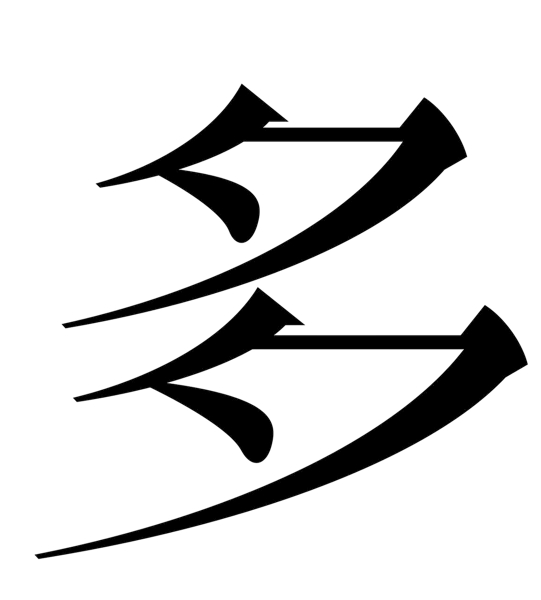

1/5
THE
Когда Иероним Босх писал своих чудовищ, он верил, что ад — это не место, а структура.
Нарушение порядка, комизм, безумие, страх, пороки — всё сливается в бесформенное месиво тел,
глаз, инструментов, звериных морд.
Был новаторским художником, который вводил абстрактные идеи в свои работы, часто используя повествовательную структуру триптиха. До сих пор искусствоведы не пришли к единому мнению по поводу интерпретации его картин. Современным ценителям искусства он известен как Иероним Босх.

2/5
THE TASTE
Это не абсурд. Это логичный итог мира, в котором всего слишком много
и одновременно нет ничего значимого.
Искусство против хаоса
Многие думают, что перенасыщение — это новая проблема, связанная с интернетом и соцсетями.
Люди сталкиваются с ней ежеденевно.
Однако прочитав статью Клэр Бишоп, становится ясно, что люди сталкивались с этим ощущением «слишком много всего» еще сотни лет назад. Как только появилось книгопечатание, и тексты стало легко тиражировать, люди тоже почувствовали себя перегруженными. Это очень важная мысль.
Получается, что наша тревога от бесконечных уведомлений и новостных лент — это не уникальное явление, а просто новая версия старой человеческой проблемы. Бишоп пишет, что искусство давно уже реагирует на этот вызов.
Однако прочитав статью Клэр Бишоп, становится ясно, что люди сталкивались с этим ощущением «слишком много всего» еще сотни лет назад. Как только появилось книгопечатание, и тексты стало легко тиражировать, люди тоже почувствовали себя перегруженными. Это очень важная мысль.
Получается, что наша тревога от бесконечных уведомлений и новостных лент — это не уникальное явление, а просто новая версия старой человеческой проблемы. Бишоп пишет, что искусство давно уже реагирует на этот вызов.

3/5
THE TASTE OF
Мы крафтим бессмысленных чудовищ, чтобы хоть как-то посмеяться,
потому что всё вокруг давно стало чудовищным и бессмысленным —
и от этого уже не смешно.
Архив
В инсталляции «Персоны» Кристиан Болтански (2010) эстетика избытка продемонстрирована с большой наглядностью:
огромная гора ношеной одежды и механический кран, который без остановки перебирает ее,
захватывая и бросая обратно.
Этот хаотичный архив не предназначен для анализа — зрителю предлагается его почувствовать, физически ощутив тяжесть анонимных жизней, превращенных в безликую массу.
Стратегия Болтански заключается в демонстрации самого этого огромного объема, который эмоционально воздействует на зрителя и сам по себе становится главным высказыванием.
Этот хаотичный архив не предназначен для анализа — зрителю предлагается его почувствовать, физически ощутив тяжесть анонимных жизней, превращенных в безликую массу.
Стратегия Болтански заключается в демонстрации самого этого огромного объема, который эмоционально воздействует на зрителя и сам по себе становится главным высказыванием.
4/5
THE TASTE OF TOO
Это новое средневековье, только личное безумие теперь в кармане,
и каждый носит с собой свой персональный Страшный суд по лайкам и репостам.
Загадочный мир в отражении нашего
В проекте «Machine Hallucinations — Nature» (2021 г.) искусственный интеллект анализирует
и синтезирует более 300 миллионов изображений природы из открытых источников.
Алгоритм выявляет визуальные паттерны и создает динамические композиции,
где узнаваемые элементы природы трансформируются в абстрактные потоки.
Художник Рефик Анадол не генерирует новые изображения, а систематизирует существующие визуальные данные, раскрывая их скрытую эстетику.
5/5
THE TASTE OF TOO MUCH
Инквизиторы всегда любезно подскажут, кого заканселить,
оставляя в серой зоне безнаказанности тех, кто достаточно богат, чтобы купить себе индульгенцию.
Вкус излишества
"The Taste of Too Much" -
роман шотландского писателя Клиффорда Хэнли,
написанный в 1960 году для взрослых.
Действие происходит в Глазго. История рассказывает о семнадцатилетнем Питере Хэддоу, который с юмором и остроумием проходит через подростковый возраст, школу, семейную жизнь и романтические отношения.
Роман известен тем, что разрушает стереотипы о подростковой преступности, представляя новый взгляд на молодежь.
Действие происходит в Глазго. История рассказывает о семнадцатилетнем Питере Хэддоу, который с юмором и остроумием проходит через подростковый возраст, школу, семейную жизнь и романтические отношения.
Роман известен тем, что разрушает стереотипы о подростковой преступности, представляя новый взгляд на молодежь.